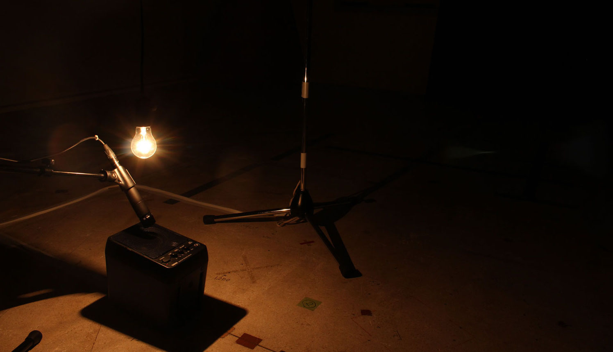

『ミニマルでアナログな美しさ』をコンセプトに創造活動を行う有志団体mute による第三回展示会
11月20日（水）18:00 〜 20:00 （オープニングイベント）
11月21日（木）10:00 〜 19:00
11月22日（金）10:00 〜 19:00
11月23日（土）10:00 〜 19:00
11月24日（日）10:00 〜 18:00
九州大学大橋キャンパス デザインコモン2F
The third exhibition by mute which is a group of creating arts with a concept: "mainimal and analog aesthetics"
Nov. 25th（Wed.）18:00 〜 20:00 (Opening event)
Nov. 26th（Thu.）10:00 〜 19:00
Nov. 26th（Fri.）10:00 〜 19:00
Nov. 26th（Sat.）10:00 〜 19:00
Sep. 27th（Sun.）10:00 〜 18:00
Kyushu University Ohashi Campus Design Common 2F
芸術工学50周年記念事業
Geijutsukougaku 50th Aniversary Project Foundation
mute は『ミニマルでアナログな美しさ』をコンセプトに制作活動を行う
最新情報は公式Twitterより
我々muteは、九州大学大橋キャンパスで制作活動を行なっていて感じた疑問点から『ミニマルでアナログな美』をコンセプトに創作活動・展示会を行なっています。
制作というものを考えてみると、表現したい事とそれを実現する方法について私たちは考えなければなりません。表現したい事という側面を見てみると、人それぞれに様々でしょう。しかし、方法となるとテレビモニターを使用した映像音響作品に偏っているように思えます。我々はそこに疑問を感じ、アナログという単語をコンセプトに用いました。テレビモニターの中だけでは終わらない、物理的、彫刻的な、体験する作品の制作を通して新たな表現に挑戦します。一方で、作品の内容について考えてみると、ついついたくさんの情報を入れ込んで、その本当に伝えたい主題がぼやけてしまうことが多々あります。我々はミニマルをコンセプトに掲げ主題について究極的に考えることで、ごまかしのきかない必要最小限の要素で構成された作品を制作し、その美を表現しようと試みています。
各展示会ごとに、サブテーマをもうけ、これと『ミニマルでアナログな美しさ』とを包含した作品を制作しています。
mute exhibits our work with "minimal and analog aesthetics as theme
Get latest informatino from official Twitter
The main theme of our group, mute , is "minimal and analog aesthetics", we decided this theme based on questions which we found in our school.
To think about making something, we have to think about what we want to express and how we can do it. "What" would be various depend on persons, on the other hand when it comes to "how," it seems to rely on audiovisual based on the TV monitor. We have a doubt on that point, so we used "analog" in our main theme. We challenge a new expression through creating physical, sculptural and experiencing works beyond the TV monitor.
On the other hand, to think the content of our works, it tends to contain a lot of information and it causes the theme of the work are blurred. We set up "minimal" as one of our themes and are trying to express aesthetics by considering a lot and creating works consisted of minimal elements.
We set up a sub-theme each exhibition, creates works including it and "minimal and analog aesthetics."